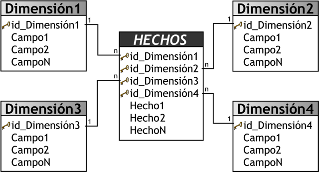
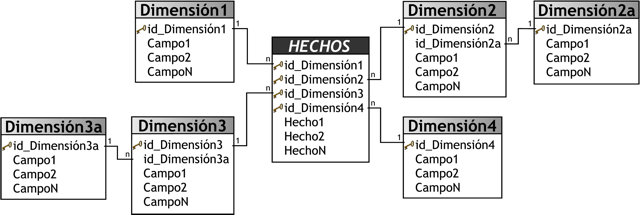

6. Almacenamiento
6.1. Datos en Big Data
Antes de profundizar en las tecnologías, es importante entender que en Big Data trabajamos con diferentes tipos de datos, lo que influye en cómo los almacenamos:
| Tipo de Datos | Descripcion | Formatos comunes | Ejemplos | Observaciones |
|---|---|---|---|---|
| Archivos de Datos Estructurados | Datos organizados en un formato con una estructura fija y predefinida, como las tablas de una base de datos relacional. | CSV | Archivos de hojas de cálculo, bases de datos SQL y archivos CSV. | Los archivos estructurados son eficientes para almacenar datos tabulares, pero pueden ser menos flexibles para datos variados o no estructurados. |
| Archivos de Datos Semiestructurados | No siguen una estructura fija como los datos estructurados, pero tienen cierta organización o jerarquía, como en el caso de archivos JSON o XML. | JSON y XML | Archivos JSON que almacenan configuraciones, datos de sensores o información de productos. | Los datos semiestructurados son ideales para representar información jerárquica, como configuraciones de aplicaciones o datos de sensores. |
| Archivos de Datos No Estructurados | Carecen de una organización o formato definido y pueden incluir archivos de imágenes, videos, documentos de texto sin formato y audio, entre otros. | Imágenes JPEG, videos MP4, documentos de texto sin formato, grabaciones de audio, etc. | Se utilizan herramientas de procesamiento de medios, visión por computadora, reconocimiento de voz y análisis de texto para extraer información de datos no estructurados. | |
| Archivos de Log | Registran eventos y actividades, como transacciones, errores o interacciones de usuarios. | Herramientas como Splunk, ELK Stack (Elasticsearch, Logstash, Kibana) y Apache Flume se utilizan para analizar y visualizar datos de registros. |
6.1.1. Clasificacción de los archivos en función del tipo de datos
| Tipo de Datos | Descripcion | Formatos comunes | Ejemplos | Observaciones |
|---|---|---|---|---|
| Archivos de Datos Estructurados | Datos organizados en un formato con una estructura fija y predefinida, como las tablas de una base de datos relacional. | CSV | Archivos de hojas de cálculo, bases de datos SQL y archivos CSV. | Los archivos estructurados son eficientes para almacenar datos tabulares, pero pueden ser menos flexibles para datos variados o no estructurados. |
| Archivos de Datos Semiestructurados | No siguen una estructura fija como los datos estructurados, pero tienen cierta organización o jerarquía, como en el caso de archivos JSON o XML. | JSON y XML | Archivos JSON que almacenan configuraciones, datos de sensores o información de productos. | Los datos semiestructurados son ideales para representar información jerárquica, como configuraciones de aplicaciones o datos de sensores. |
| Archivos de Datos No Estructurados | Carecen de una organización o formato definido y pueden incluir archivos de imágenes, videos, documentos de texto sin formato y audio, entre otros. | Imágenes JPEG, videos MP4, documentos de texto sin formato, grabaciones de audio, etc. | Se utilizan herramientas de procesamiento de medios, visión por computadora, reconocimiento de voz y análisis de texto para extraer información de datos no estructurados. | |
| Archivos de Log | Registran eventos y actividades, como transacciones, errores o interacciones de usuarios. | Herramientas como Splunk, ELK Stack (Elasticsearch, Logstash, Kibana) y Apache Flume se utilizan para analizar y visualizar datos de registros. |
6.1.2. Formatos de Archivos Más Comunes en Big Data
| Formato | Descripcion | Usos más comunes |
|---|---|---|
| Avro | Avro es un formato de datos que se utiliza para la serialización de datos y es compatible con múltiples lenguajes de programación. Es eficiente, compacto, esquemático y permite la evolución de esquemas de datos. | Avro se utiliza en sistemas de registro y en la comunicación entre componentes de Big Data. |
| Parquet | Parquet es un formato de columna abierto que se utiliza para el almacenamiento eficiente de datos estructurados y semiestructurados. Ofrece compresión eficiente y procesamiento de columnas, lo que lo hace adecuado para análisis de Big Data. | Parquet se utiliza en aplicaciones de análisis de datos, como Apache Hive y Apache Impala. |
| ORC | ORC (Optimized Row Columnar) es un formato de archivo de columna optimizado para la eficiencia en el almacenamiento y procesamiento de datos. Se compara favorablemente con Parquet y Avro en términos de eficiencia y velocidad de consulta. | ORC se utiliza en sistemas como Apache Hive y proporciona un rendimiento eficiente en consultas analíticas. |
| Sequence | Los archivos Sequence almacenan datos en un formato de secuencia binaria y son adecuados para la entrada y salida de datos de alto rendimiento. | Se utilizan para almacenar registros y datos de flujo. |
6.1.3. Almacenamiento de Datos en Columnas vs Filas
El almacenamiento de datos en columnas y en filas son dos enfoques diferentes para organizar y almacenar datos en bases de datos.
| Almacenamieto | En Filas | En Columnas |
|---|---|---|
| Descripcion | Cada fila representa una entidad o un registro completo. | En operaciones de lectura/escritura de registros completos. |
| Eficiente | ara operaciones de actualización frecuente de registros individuales. | Para operaciones de agregación y análisis de datos, como consultas OLAP y análisis de datos grandes. |
| No Eficiente | Para operaciones de agregación y análisis de datos que implican múltiples columnas | Para operaciones de actualización frecuente de registros individuales. |
| Adecuado | Para bases de datos transaccionales y aplicaciones que requieren actualizaciones frecuentes. | Para bases de datos analíticas y almacenes de datos (Data Warehouses). |
| Ejemplo | BD Relacionales tradicionales. | BD Analíticas columnares, como Apache Cassandra o Apache HBase. |
Comparativa con un ejemplo.
Si tenemos la siguiente tabla:
| Name | City | Age |
|---|---|---|
| Matt | LosAngeles | 27 |
| Dave | SanFrancisco | 30 |
| Tin | Oakland | 33 |
En un almacenamiento por Filas los datos se guardan asi:
| Matt | LosAngeles | 27 | Dave | SanFrancisco | 30 | Tin | Oakland | 33 |
En una almacenamiento por Columnas sería así:
| Matt | Dave | Tin | Oakland | Los Angeles | San Francisco | 27 | 30 | 33 |
6.2. Componentes Clave del Almacenamiento en Big Data
El almacenamiento en Big Data se organiza a través de varios componentes que gestionan la forma en que los datos se guardan, acceden, y procesan:
6.2.1. Data Lakes
Un data lake es un sistema de almacenamiento de datos que permite guardar grandes volúmenes de datos en su formato original. A diferencia de un data warehouse, que requiere estructurar los datos antes de almacenarlos, un data lake acepta datos en bruto, en cualquier formato. Las principales carácteristicas de un data lake son:
- Almacenamiento flexible: Puede contener datos estructurados (tablas de bases de datos), semiestructurados (archivos XML, JSON), y no estructurados (videos, imágenes, documentos).
- Escalabilidad: Se adapta a grandes volúmenes de datos, creciendo según las necesidades.
- Bajo costo: Utiliza almacenamiento en la nube para ahorrar costes, ya que no es necesario procesar los datos previamente.
- Acceso diverso: Permite el acceso a los datos en su forma original, para que diferentes usuarios (científicos de datos, analistas, etc.) puedan trabajar con ellos según sus necesidades.
6.2.1.1. Arquitectura de un Data Lake
La arquitectura de un data lake suele componerse de varias capas:
- Ingestión de datos: Es el proceso mediante el cual los datos se introducen en el data lake. Se pueden usar diferentes métodos, como:
- Batch processing (procesamiento por lotes): Los datos se cargan en intervalos regulares.
- Stream processing (procesamiento en tiempo real): Los datos se cargan en tiempo real, conforme se generan.
- Almacenamiento: En esta capa, los datos se almacenan en su formato original. Se puede usar almacenamiento en la nube, como Amazon S3, Google Cloud Storage o Azure Data Lake.
- Catalogación y gestión de metadatos: Es importante tener un catálogo de datos para identificar, buscar y gestionar los datos almacenados. Esto incluye metadatos (información sobre los datos) para facilitar el acceso.
- Procesamiento y análisis: Los datos almacenados pueden ser procesados y transformados para realizar análisis avanzados, como big data analytics y machine learning.
- Seguridad y gobierno de datos: Es fundamental proteger los datos y cumplir con normativas legales (como GDPR). Esto implica controlar quién puede acceder a qué datos y asegurar la calidad de los mismos.
6.2.1.3. Ventajas y desventajas de un Data Lake
Ventajas:
- Almacenamiento de datos en su formato original, lo que permite realizar análisis avanzados.
- Escalabilidad: Se adapta fácilmente a grandes volúmenes de datos.
- Integración con herramientas de análisis y big data.
Desventajas:
- Puede volverse un "data swamp" (pantano de datos) si no se gestiona adecuadamente, con datos difíciles de encontrar y de baja calidad.
- Requiere un sistema de gestión de metadatos sólido para facilitar el acceso a la información.
- Análisis más complejo en comparación con los data warehouses, ya que los datos no están estructurados.
6.2.1.4. Buenas prácticas para gestionar un Data Lake
- Organizar los datos con un esquema lógico (por ejemplo, por departamentos o proyectos).
- Utilizar un catálogo de datos para identificar, buscar y gestionar los datos almacenados.
- Implementar controles de calidad y seguridad para garantizar la integridad de los datos.
- Monitorizar el uso del Data Lake para evitar la acumulación de datos irrelevantes o desactualizados.
- Capacitar al personal en el uso y gestión de los datos dentro del data lake.
6.2.1.5. Herramientas populares para Data Lake
- Amazon S3 (AWS): Amplia integración con servicios en la nube de Amazon.
- Azure Data Lake (Microsoft): Ofrece almacenamiento escalable y servicios de análisis.
- Google Cloud Storage: Integración con herramientas de análisis de Google.
- Apache Hadoop: Sistema de almacenamiento distribuido para grandes volúmenes de datos.
6.2.1.2. Etapas de un Data Lake
En un data lake los datos suelen pasar por varias etapas antes de ser consumidos o analizados. Las etapas más comunes son:
-
Ingestión de Datos En esta etapa, se recopilan datos de diferentes fuentes, como bases de datos, archivos, flujos de datos en tiempo real, APIs, entre otros. Los datos pueden ser estructurados (tablas), semi-estructurados (JSON, XML) o no estructurados (imágenes, videos, texto libre). La idea es traer los datos "tal cual" están en las fuentes originales.
-
Almacenamiento en Crudo (Raw Data) Después de la ingestión, los datos se almacenan en su formato original, sin procesar. Esta capa se conoce como "capa de datos crudos" o raw layer. Aquí se guarda toda la información sin modificaciones, lo que permite conservar el contexto completo y facilita el reprocesamiento si es necesario.
-
Limpieza y Preparación (Staging) En la capa de staging, los datos se limpian y transforman mínimamente para corregir errores, manejar datos faltantes y asegurar que sean consistentes. Sin embargo, no se realizan transformaciones complejas. El objetivo es preparar los datos para ser procesados o analizados con mayor facilidad.
-
Transformación y Procesamiento (Curated Data) Aquí, los datos se transforman en un formato que sea más útil para el análisis, como agregaciones, normalización o cálculo de métricas específicas. Esta etapa también puede incluir la integración de datos provenientes de diferentes fuentes para crear una vista consolidada. La capa resultante se conoce como "datos curados" o curated layer.
-
Almacenamiento para Análisis (Presentation Layer) Una vez que los datos están curados, se almacenan en una capa preparada para ser consumida por usuarios finales, aplicaciones de análisis o herramientas de inteligencia de negocio (BI). En esta etapa, los datos se organizan para facilitar su acceso y uso, a menudo estructurándolos en modelos específicos para el análisis, como tablas de hechos y dimensiones en un esquema de data warehouse.
-
Consumo Finalmente, los usuarios o aplicaciones acceden a los datos para análisis, reportes, visualización o modelado predictivo. En esta etapa se aprovechan herramientas como consultas SQL, herramientas de BI o incluso algoritmos de aprendizaje automático para generar valor a partir de los datos.
Un Data Lake es un repositorio que permite almacenar datos en su formato nativo, tanto estructurados como no estructurados, sin necesidad de organizarlos en esquemas predefinidos como en las bases de datos tradicionales.
Características: Almacena grandes volúmenes de datos crudos. Permite almacenar datos en distintos formatos: JSON, Parquet, CSV, Avro, videos, imágenes, etc. Los datos se procesan y estructuran solo cuando se necesitan (enfoque "schema on read"), lo que lo hace flexible. Ejemplos de tecnologías de Data Lake: Hadoop Distributed File System (HDFS): Un sistema de almacenamiento distribuido que permite gestionar grandes volúmenes de datos en clústeres distribuidos. Amazon S3: Solución de almacenamiento en la nube ampliamente utilizada como Data Lake para datos crudos. Azure Data Lake: Solución en la nube de Microsoft para almacenar y analizar datos en su formato original.
6.2.3. Data Warehouses
El Data Warehouse es un almacén de datos estructurados que se utiliza para el análisis y consulta de información histórica o agregada. A diferencia de los Data Lakes, aquí los datos son organizados y optimizados para consultas eficientes (enfoque "schema on write").
Características:
- Optimizado para análisis OLAP (Online Analytical Processing) y consultas SQL.
- Utiliza técnicas de modelado de datos, como esquemas en estrella o copo de nieve, para organizar la información.
- Se utiliza principalmente para Business Intelligence (BI) y análisis más profundos.
6.2.3.1. Arquitectura de un Data Warehouse
Un data warehouse generalmente sigue una arquitectura de tres capas:
-
Capa de Fuente de Datos: En esta capa, los datos provienen de diferentes fuentes, como:
- Bases de datos transaccionales (ERP, CRM).
- Archivos planos (CSV, Excel).
- Aplicaciones externas y APIs. Los datos de las fuentes se extraen mediante el proceso ETL (Extract, Transform, Load) o ELT (Extract, Load, Transform), para cargarlos en el data warehouse.
-
Capa de Almacenamiento: Aquí es donde los datos se almacenan y organizan en un esquema definido. Los modelos más comunes son:
- Modelo de estrella (Star Schema): Organiza los datos en una tabla de hechos central con tablas de dimensiones alrededor. 
- Modelo de copo de nieve (Snowflake Schema): Similar al modelo estrella, pero las tablas de dimensiones se normalizan en múltiples niveles. 
- Modelo de galáctica (Galaxy Schema): Combina múltiples modelos de estrella o copo de nieve, útil para escenarios complejos.
- Capa de Presentación: Es la capa en la que los usuarios finales acceden a los datos para realizar consultas, generar informes o crear visualizaciones. Las herramientas de business intelligence (BI) y analítica se conectan a esta capa para consumir los datos.
6.2.3.2. ETL (Extract, Transform, Load)
El proceso ETL es fundamental para la gestión de un data warehouse y consta de tres etapas principales:
- Extract (Extracción): Los datos se extraen de diferentes fuentes, como bases de datos, archivos o aplicaciones.
- Transform (Transformación): Se limpian, filtran y transforman los datos para adecuarlos al esquema del data warehouse.
- Load (Carga): Los datos transformados se cargan en el data warehouse, listos para ser utilizados en análisis.
Alternativa: ELT (Extract, Load, Transform)
En este enfoque, los datos se cargan primero en el data warehouse y luego se transforman. Es útil en entornos de big data donde los datos son muy grandes y necesitan ser procesados en paralelo.
6.2.3.3. Ventajas y Desventajas del Data Warehouse
Ventajas:
- Rendimiento optimizado para consultas: Permite ejecutar consultas complejas de forma rápida.
- Consolidación de datos: Unifica datos de múltiples fuentes para un análisis coherente.
- Calidad y consistencia de los datos: Los procesos de transformación aseguran que los datos sean de alta calidad.
Desventajas:
- Alto costo de implementación y mantenimiento: La estructuración y el almacenamiento de datos pueden ser costosos.
- Falta de flexibilidad: Cambiar la estructura del data warehouse puede ser difícil y requerir mucho tiempo.
- Tiempo de procesamiento de ETL: Los procesos ETL pueden llevar tiempo, lo que puede causar demoras en la disponibilidad de datos.
6.2.3.4. Buenas Prácticas para la Gestión de un Data Warehouse
- Definir un modelo de datos claro: Elegir un modelo adecuado (estrella, copo de nieve, galáctica) para organizar los datos.
- Automatizar el proceso ETL: Usar herramientas para automatizar la extracción, transformación y carga de datos.
- Monitorear el rendimiento: Optimizar consultas y procesos para evitar cuellos de botella.
- Garantizar la calidad de los datos: Implementar controles para detectar y corregir errores en los datos.
- Documentar la arquitectura y el flujo de datos: Facilitar la comprensión y mantenimiento del data warehouse.
6.2.3.5. Herramientas Populares para Data Warehouses
- Amazon Redshift (AWS): Solución en la nube con alta escalabilidad y rendimiento.
- Google BigQuery (Google Cloud): Plataforma de análisis rápido con integración nativa en Google Cloud.
- Azure Synapse Analytics (Microsoft): Combina data warehousing con análisis de grandes volúmenes de datos.
- Snowflake: Plataforma de data warehouse en la nube que facilita el escalado y la gestión de datos.
- Teradata y Oracle Data Warehouse: Soluciones tradicionales con un amplio soporte para grandes organizaciones.
6.2.3.6. Diferencias entre Data Warehouse y Data Lake
| Característica | Data Warehouse | Data Lake |
|---|---|---|
| Estructura de los datos | Datos estructurados y organizados. | Datos en bruto, sin procesar. |
| Uso principal | Análisis empresarial, informes y business intelligence. | Análisis avanzado, big data, machine learning. |
| Costo de almacenamiento | Mayor costo debido a la necesidad de estructurar los datos. | Menor costo, ya que no requiere procesamiento previo. |
| Flexibilidad | Menos flexible, los esquemas deben ser definidos de antemano. | Muy flexible, admite datos en cualquier formato. |
| Escalabilidad1Escalabilidad limitada por la estructura de datos. | Escalabilidad elevada, adaptándose a grandes volúmenes de | datos. |
6.2.4. Bases de Datos NoSQL
Las bases de datos NoSQL son especialmente útiles para manejar datos semiestructurados y no estructurados. A diferencia de las bases de datos relacionales (SQL), NoSQL no requiere esquemas fijos y permite una escalabilidad más flexible, lo que las hace adecuadas para Big Data.
Características: - Diseñadas para datos no estructurados o semiestructurados. - Altamente escalables horizontalmente (a través de múltiples servidores). - Permiten manejar grandes volúmenes de datos, con soporte para datos distribuidos.
Tipos de bases de datos NoSQL:
- Documentales: Almacenan datos en formato de documento (JSON, BSON, XML). Ejemplo: MongoDB.
- Clave-valor: Almacenan datos como pares clave-valor. Ejemplo: Redis, Amazon DynamoDB.
- Columnar: Almacenan datos por columnas, optimizadas para grandes cantidades de datos estructurados o semiestructurados. Ejemplo: Apache Cassandra, HBase.
- Grafos: Almacenan datos como nodos y aristas, ideales para representar relaciones complejas entre entidades. Ejemplo: Neo4j.
6.2.5. Archivos Distribuidos
Los sistemas de archivos distribuidos permiten almacenar grandes volúmenes de datos a través de múltiples nodos o servidores, lo que garantiza una alta disponibilidad, escalabilidad y redundancia.
- Hadoop Distributed File System (HDFS): El sistema de almacenamiento subyacente en los clústeres de Hadoop. Almacena datos en bloques distribuidos entre los nodos del clúster, asegurando replicación para alta disponibilidad.
- GlusterFS y Ceph: Otras alternativas de sistemas de archivos distribuidos, utilizadas en entornos on-premise o en la nube.
6.3. Estrategias de Almacenamiento
Las organizaciones de Big Data suelen emplear una combinación de los sistemas mencionados, dependiendo de la naturaleza de sus datos y del tipo de análisis que planean realizar.
- Almacenamiento por Capas (Tiered Storage): Esta estrategia consiste en utilizar diferentes tipos de almacenamiento dependiendo de la frecuencia de uso o la importancia de los datos:
- Hot Data: Datos que necesitan ser accesados rápidamente y frecuentemente. Se suelen almacenar en bases de datos de alta velocidad o sistemas de almacenamiento en memoria, como Redis o bases de datos NoSQL optimizadas para velocidad.
- Warm Data: Datos que se usan regularmente pero no de manera crítica. Se almacenan en bases de datos o sistemas distribuidos, como HDFS o Data Warehouses.
- Cold Data: Datos históricos o que se usan muy ocasionalmente. Se almacenan en soluciones de largo plazo y bajo costo, como Amazon S3 o almacenamiento en cinta.
- Gestión de Archivos y Formatos: El formato en que se almacena la información también influye en el rendimiento y la accesibilidad de los datos. En sistemas de Big Data, se emplean formatos optimizados para su lectura y procesamiento a gran escala:
- Parquet y ORC: Formatos columnar diseñados para almacenamiento y lectura eficiente en análisis de grandes volúmenes de datos. Son muy utilizados en frameworks como Apache Hive y Apache Spark.
- Avro: Un formato orientado a filas que se utiliza principalmente en el procesamiento por lotes y para transmitir datos entre sistemas distribuidos.
6.4. Gobernanza de datos
La gobernanza de datos se refiere al conjunto de procesos, políticas, estándares y procedimientos que garantizan la calidad, integridad, seguridad, privacidad y cumplimiento normativo de los datos en una organización.Es esencial para garantizar que los datos sean confiables, precisos y seguros. Además, es fundamental para cumplir con regulaciones de privacidad y normativas específicas de la industria.
Los datos son activos críticos para las organizaciones y son la base de la toma de decisiones. La gestión adecuada de los datos es esencial para el éxito empresarial.
Una sólida gobernanza de datos conlleva beneficios como datos confiables, toma de decisiones informada y cumplimiento normativo, lo que mejora la eficiencia y la competitividad de la organización.
6.4.1. Componentes Clave de la Gobernanza de Datos
Políticas y Procedimientos
- Establecer políticas que rigen la gestión, calidad, privacidad y seguridad de los datos en la organización.
- Definir procesos y estándares que aseguren el cumplimiento de las políticas.
- Supervisar y hacer cumplir las políticas de datos para garantizar la conformidad.
Metadatos
- Los metadatos describen los datos, su origen, estructura y significado, lo que facilita la gestión y el rastreo de los datos.
- Los metadatos son esenciales para catalogar, buscar y entender los datos.
- Los diccionarios de datos y los catálogos de metadatos ayudan a organizar y acceder a información sobre los datos.
Data Owners y Data Stewards
- Data Owneras son los propietarios de los datos que establecen la dirección estratégica y la toma de decisiones en torno a los datos.
- Los data Stewards son los responsables de los datos y se centran en la implementación opertiva y en garantiza que los datos cumplan los estándares y políticas establecidas.
Calidad de Datos
- Evaluar la calidad de los datos y tomar medidas para mejorarla.
- Técnicas para Identificar y Resolver Problemas de Calidad de Datos: Utilizar técnicas como la validación, limpieza y estandarización de datos.
- Monitorización continua para garantizar la calidad de los datos.
Seguridad y Privacidad de Datos
- Implementar medidas de seguridad para proteger datos confidenciales y sensibles.
- Cumplir con regulaciones como el RGPD (Reglamento General de Protección de Datos) para garantizar la privacidad de los datos.
- Establecer controles de acceso y permisos para garantizar que solo las personas autorizadas puedan acceder a los datos.
Cumplimiento Normativo
- Asegurarse de que los datos cumplan con regulaciones específicas de la industria en la que opera la organización.
- Mantener registros y documentación que demuestren el cumplimiento de las regulaciones.
- Comprender las sanciones por incumplimiento y riesgos asociados.
6.5. Desafíos en el Almacenamiento de Big Data
El almacenamiento en sistemas de Big Data enfrenta varios retos, entre los cuales destacan:
- Escalabilidad: Es crucial poder almacenar grandes volúmenes de datos y mantener la capacidad de ampliarlos fácilmente sin perder rendimiento.
- Redundancia y recuperación ante fallos: Los sistemas deben estar preparados para manejar la replicación de datos y asegurarse de que la información esté siempre disponible, incluso si fallan algunos nodos o servidores.
- Accesibilidad y latencia: Los datos deben poder accederse y procesarse de manera eficiente, lo que implica diseñar sistemas que minimicen la latencia en las consultas.
- Seguridad: El almacenamiento de datos masivos debe incorporar políticas de seguridad robustas para proteger la información sensible y cumplir con regulaciones, como la GDPR.
6.6. Actividades
6.6.1. Actividdad Data Lake
Una empresa de comercio electrónico que quiere construir un data lake para mejorar su análisis de ventas y entender mejor el comportamiento de sus clientes. La empresa tiene múltiples fuentes de datos:
- Una base de datos transaccional que registra las compras de los clientes.
- Archivos CSV que contienen datos de inventario de productos.
- Datos semi-estructurados en formato JSON de campañas de marketing y anuncios en redes sociales.
- Flujos en tiempo real de clics en la página web.
Define las etapas del Data Lake para esta empresa
6.6.2. Actividad Almacenamiento en un Proyecto Big Data
Imagina que trabajas en un proyecto de análisis del rendimiento académico de estudiantes en un instituto, con datos sobre calificaciones, asistencia y encuestas de satisfacción.
¿Que estructura de almacenamiento creaerías?